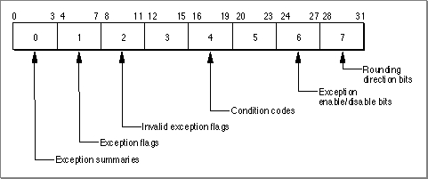
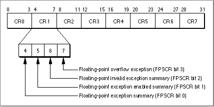

The Floating-Point Environment
The two special-purpose registers that reflect and control the floating-point environment are the Floating-Point Status and Control Register and the Condition Register.The Floating-Point Status and Control Register
The Floating-Point Status and Control Register (FPSCR) is a 32-bit register that stores the current state of the floating-point environment. It specifies the current rounding direction, whether any floating-point exceptions are enabled, and whether any floating-point exceptions have occurred. Many instructions that manipulate the FPSCR operate on 4-bit fields numbered 0 through 7. Figure 12-1 highlights some of the more useful fields in the FPSCR, and Table 12-1 shows their bit assignments. For more information on floating-point instructions, see the Motorola PowerPC 601 RISC Microprocessor User's Manual.Figure 12-1 Floating-Point Status and Control Register (FPSCR)
Bit assignments for FPSCR fields FPSCR
fieldBit Meaning if set 0 0 One or more of the floating-point exceptions occurred. 1 One or more of the floating-point exceptions is enabled. 2 One or more of the invalid exceptions occurred. 3 An overflow exception occurred. 1 4 An underflow exception occurred. 5 A divide-by-zero exception occurred. 6 An inexact exception occurred. 7 An invalid exception occurred because an operation other than load, store, move, select, or mtfsfwas attempted on a signaling NaN.2 8 An invalid exception occurred because was attempted. 9 An invalid exception occurred because was attempted. 10 An invalid exception occurred because was attempted. 11 An invalid exception occurred because was attempted. 3 12 An invalid comparison operation was attempted. 13 The fraction field of the result has been rounded. 14 The fraction field of the result is inexact. 15 Class descriptor. See "Inquiries: Class and Sign" on page 12-7. 4 16 Less than or less than 0. See "Inquiries: Class and Sign" on page 12-7. 17 Greater than or greater than 0. See "Inquiries: Class and Sign" on page 12-7. 18 Equal to or equal to 0. See "Inquiries: Class and Sign" on page 12-7. 19 Unordered or NaN. See "Inquiries: Class and Sign" on page 12-7. 5 20 Reserved. 21 An invalid exception occurred because of a software request. Not implemented in MPC601. 22 An invalid square-root operation was attempted. Not implemented in MPC601. 23 An invalid exception occurred because of an invalid convert-to-integer operation. 6 24 The invalid exceptions are enabled. 25 The overflow exception is enabled. 26 The underflow exception is enabled. 27 The divide-by-zero exception is enabled. 7 28 The inexact exception is enabled. 29 Reserved. 30 Rounding direction. See "Setting the Rounding Direction" on page 12-9. 31 Rounding direction. See "Setting the Rounding Direction" on page 12-9. 
- IMPORTANT
- Bit 20 or 23 of the Machine State Register must be set for the FPSCR exception enable bits to be valid. For more information, see the Motorola PowerPC 601 RISC Microprocessor User's Manual.
The Condition Register
The Condition Register is a 32-bit register that stores the current state of the entire PowerPC processor. It is grouped into eight 4-bit fields labeled CR0 through CR7 (see
Figure 12-2). Field CR1 (bits 4 through 7) reflects the results of floating-point operations.Figure 12-2 Condition Register

If you append a dot (.) to a floating-point instruction, its status will be recorded in the Condition Register as well as in the FPSCR. If you do not append a dot, the Condition Register will not reflect the result of that instruction.
Use Condition Register fields in conditional branch instructions. Several instructions allow you to store certain FPSCR bits in fields CR2 through CR4. After using one of these instructions, you then use a conditional branch instruction of the form
instr field, address
where field is the Condition Register field 2 through 4 and address is the address to branch to if the condition is true. Table 12-2 shows some commonly used PowerPC branch instructions. Examples of how to use the conditional branch instructions appear later in this chapter. For a complete list of conditional branch instructions, see the Motorola PowerPC 601 RISC Microprocessor User's Manual.